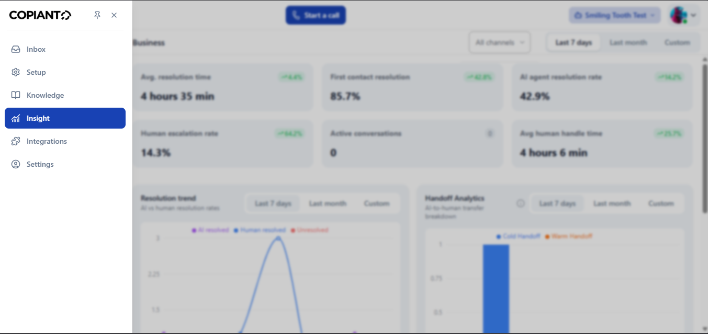

Copianto.ai
Company
HDX Technologies
Role
Backend Developer
Duration
Jun 2024 – Sep 2025

The Product
Copianto.ai is a live AI platform that lets businesses deploy intelligent chatbots trained on their own data - documents, websites, internal files - to handle customer support, automate repetitive queries, and seamlessly hand off to human agents when the situation demands it. Think of it as giving any customer service team an AI-first layer that actually knows their business, not just a generic bot that frustrates users into abandoning the conversation.
I joined the backend team at Copianto.Ai mid-build and contributed to several of the platform's most technically complex features from design through to production deployment.
What I Built
Knowledge Base Ingestion - Multi-Format File Uploads
For a chatbot to be useful, it needs to know things. I built the ingestion pipeline that allows users to upload their own knowledge base in whatever format their documents actually live in - PDFs, plain text files, CSVs, and more. Different file types require different parsing strategies, and the extracted content has to be cleaned, chunked, and stored in a form that the AI can actually retrieve meaningfully at query time.
Under the hood, ingestion jobs run asynchronously via Celery with Redis as the message broker - so uploading a large PDF doesn't block the user's session or time out. Once processed, embeddings are stored in Weaviate, a vector database, enabling semantic search across the knowledge base rather than brittle keyword matching. Getting that pipeline reliable across formats - handling malformed files, encoding issues, large documents - was foundational work that every other feature on the platform depends on.
Selective URL Training
One of the features I'm most proud of on this project. When businesses want to train their bot on their website, the naive approach is to crawl the entire domain. That's almost always wrong - you end up ingesting privacy policies, login pages, outdated blog posts from five years ago, and pages that have nothing to do with what customers actually ask about.
I built a system powered by Scrapy that lets users crawl a URL, see all the sublinks it discovers, and selectively choose exactly which pages they want included in the training data. The user stays in control. A customer service team can say "train on our documentation and our FAQ, but not our careers page and not our internal tools." That granularity makes the resulting bot meaningfully better.
Handoff Logic - Cold vs. Warm Escalation
This was the feature that required the most careful design thinking. When an AI chatbot reaches its limits, what happens next matters enormously. Get it wrong and you either leave users stranded mid-conversation or you interrupt human agents constantly with issues the bot could have handled.
I built and implemented the filter logic that distinguishes between two fundamentally different scenarios. A cold handoff is when the bot itself detects it can't adequately handle a conversation - based on sentiment, query complexity, or explicit escalation triggers - and routes it to a human agent queue. A warm handoff is when a human agent actively chooses to enter an ongoing conversation, stepping in alongside the bot rather than replacing it. These two flows look similar on the surface but require completely different state management, notification behaviour, and UI feedback. Getting the escalation triggers right - not too sensitive, not too lenient - required iterative tuning against real conversation data.
Workspace Escalation & Agent Notification System
When a chat requires urgent human attention, the right people need to know immediately. I built the escalation notification system that broadcasts an alert to all agents within a workspace when a conversation is flagged - email notifications with enough context that an agent can understand the situation before they even open the chat. The system had to handle workspace-level routing correctly: only the agents belonging to the relevant workspace receive the alert, not the entire platform.
Analytics Engine
Businesses deploying customer support tooling need to understand whether it's actually working. I built the analytics layer that tracks the metrics that matter operationally: how long chats last, how long it takes to resolve an escalated issue from the moment it's flagged to the moment an agent closes it, activity patterns across the platform.
Facebook Messenger Integration
I integrated Messenger as a supported channel on the platform, meaning businesses could deploy their Copianto.ai chatbot directly through their Facebook Page without any custom development on their end. This involved working with Meta's Messenger API - webhook setup, message format handling, and making sure the platform's conversation state management worked correctly across a channel with its own delivery semantics and constraints.
Workspace Invitation System
Teams need to collaborate. I built the system that allows workspace owners to invite colleagues - handling invitation flows, email delivery, role assignment on acceptance, and the edge cases around expired or already-used invitation links.
What Made This Work Hard
The most consistently difficult part of this project was designing features that felt simple to users but required careful backend architecture to actually be reliable. The selective URL training is a good example - what the user sees is a checklist. What sits behind that checklist is a crawling system, a deduplication layer, a content extraction pipeline, and a training trigger that has to handle failures gracefully without the user ever knowing something went wrong in the middle.
The handoff system had a different kind of complexity - it was a distributed state problem. At any given moment, a conversation could be in AI-only mode, in human-monitored mode, or in full agent takeover. Every part of the platform that touches conversations had to reason correctly about that state, and the transitions between states had to be atomic enough that nothing got lost in the middle of a switch.
Working on a live product with real business customers meant the cost of getting something wrong was real and immediate. That sharpens your thinking considerably.
Outcome
Copianto.ai is live and in active use by businesses deploying AI-powered customer support. The features I built - knowledge base ingestion, selective training, handoff logic, analytics, Messenger integration - are core to the platform's value proposition, not peripheral additions.
This engagement was the most technically complex work I've done to date. It pushed me to think seriously about system design, not just feature implementation - about how the pieces fit together, what breaks under load, and what good looks like for a user who never thinks about the infrastructure keeping their chatbot running.